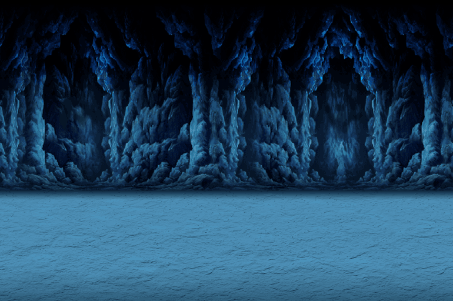

-https://image.pngaaa.com/203/5937203-middle.png
-https://battlecats.club/wp-content/themes/nyanko/img/index/mainvisual_chara02.png
-https://battlecats.club/en/series/battlecats/img/game_chara02.png
-https://static.wikia.nocookie.net/battle-cats/images/a/a5/Mobile_-_The_Battle_Cats_-_Cat_Base.png/revision/latest?cb=20180325132026
-https://upload.wikimedia.org/wikipedia/en/thumb/1/1f/PONOS_logo.png/220px-PONOS_logo.png
-https://play-lh.googleusercontent.com/WZ6STwaXOFyrlCFH9Ls4uHQYVPDhISlUo3jTLpzJNMjpCsnP12yoEYZ8dSKXPFctEZyD
-https://img.utdstc.com/icon/4d6/8f4/4d68f411394ebf275f63db2dc5400cc4f0426ffbc98c3b936b7ec221506420ce:200
-https://static.wikia.nocookie.net/battle-cats/images/1/14/Bg000.png/revision/latest/scale-to-width-down/770?cb=20160217191222
-https://static.wikia.nocookie.net/battle-cats/images/c/cc/Bg001.png/revision/latest/scale-to-width-down/770?cb=20160217191329
-https://static.wikia.nocookie.net/battle-cats/images/c/ca/Bg006.png/revision/latest/scale-to-width-down/770?cb=20160217191746
-https://www.youtube.com/watch?v=eMR2EHrv5dg&list=PL-qRvz21Rlx3y92XCMsrvCXzKKzAk2rEp&index=2
-https://www.youtube.com/watch?v=JURtuwD9TsU&list=PL-qRvz21Rlx3y92XCMsrvCXzKKzAk2rEp&index=4
-https://www.youtube.com/watch?v=jf2nSwZn-aE&list=PL-qRvz21Rlx3y92XCMsrvCXzKKzAk2rEp&index=12
-https://en.wikipedia.org/wiki/PONOS
